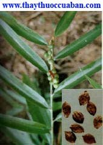

Tên Khác:
Vị thuốc diếp đắng còn gọi là Anh Hoa Khố, Ích Chí Tử (Khai Bảo Bản Thảo), Trích Đinh Tử (Trung Dược Tài Thủ Sách).
Tên khoa học: Alpinia oxyphylla Miq. Họ :Họ Gừng (Zinggiberaceae).
Tiếng Trung: 益 智 仁
Cây diếp đắng
( Mô tả, hình ảnh, thu hái, chế biến, thành phần hoá học, tác dụng dược lý ....)
Mô tả:
Cây thảo, sống lâu năm, cao 1-1,5m. toàn cây có vị cay. Lá hình mác dài 17-33cm, rộng 3-6cm. Hoa tự hình chùm mọc ở đầu cành. Hoa mầu trắng, có đốm tím. Quả hình cầu, đường kính 1,5cm, khi chín có mầu vàng xanh, hạt nhiều cạnh mầu xanh đen.
Mọc hoang ở vùng rừng núi trung và thượng du Việt Nam nhưng vẫn phải nhập.
Bộ phận dùng:
Quả và hạt phơi khô (Fructus Alpiniae Oxyphyllae).
Thu hái, chế biến:
Thu hái vào tháng 7-8 khi quả chuyển từ mầu xanh sang vàng. Phơi hoặc sấy khô. Hạt to, mập là tốt.
Mô tả dược liệu:
Quả hình bầu dục, 2 đầu hơi nhọn, dài 20-24cm, đường kính 1,2-1,6cm. Vỏ mầu nâu đỏ hoặc nâu xám, có 13-20 đường chỉ dọc nổi lên lồi lõm không đều, vỏ mỏng, hơi dẻo, dính sát với hạt. Hạt bó chặt với nhau, trong có màng mỏng chia thành 3 múi, mỗi múi có 6-11 hạt. Hạt là 1 khối tròn dẹt không nhất định, có cạnh hơi tầy, lớn nhỏ chừng 0,4cm, mầu nâu xám hoặc vàng xám, đập vỡ thì bên trong mầu trắng, có chất bột (Dược Tài Học).
Bào chế: diếp đắng
Đập bỏ vỏ ngoài, lấy cát cho vào nồi sao to lửa cho nóng rồi cho diếp đắng vào sao cho vỏ phồng lên, có mầu vàng là được. Lấy ra, rây sạch cát, sẩy sạch, chỉ lấy nhân. Trộn với nước muối (cứ 50kg diếp đắng dùng 1,4kg muối), lại sao qua, lấy ra để nguội dùng dần. Không nên sao kỹ quá sẽ mất tinh dầu (Dược Tài Học).
Bảo quản:
Để chỗ khô ráo, râm mát.
Thành phần hóa học:
Trong diếp đắng có chừng 0,7% tinh dầu, thành phần chủ yếu của tinh dầu làTecpen C10H16, Sesquitecpen C10H24 và Sesquitecpenancola, có chừng l,7 l% chất Saponin (Sổ Tay Lâm Sàng Trung Dược).
a-Cyperone, 1,8-Cineole, 4-Terpineol, a-Terpineol, b- Elemene, 1-Methyl-3-Isopropoxy cyclohexane, a-Dimethyl Benzepropanoic acid, Guaiol, Zingiberol, a-Eudesmol, Aromadendrene (Vương Ninh Sinh, Trung Dược Tài 1991, 14 (6): 38).
Gingerol Sankawa U. Igakuno Ayumi 1983, 126 (11): 867).
Nootkatol(Shoji N và cộng sự, C A 1984, 101: 35960u).
Tác dụng Dược lý:
Thuốc có tác dụng ức chế co bóp hồi tràng, cường tim, làm gĩan mạch (Trung Dược Học).
Nước sắc diếp đắng cho uống 50mg/kg đối với chuột, thấy có tác dụng chống loét dạ dầy (Yamahara J và cộng sự, Chem Pharm Bull Tokyo 1990, 38 (11): 3053).
Nước sắc diếp đắng có tác dụng ức chế tiền liệt tuyến (Giang Cẩm Bang, Trung Quốc Trung Dược Tạp Chí 1990, 15 (8): 492).
Nước sắc diếp đắng có tác dụng làm tăng ngoại chu vi huyết dịch bạch tế bào (Chu Kim Hoàng, Trung Dược Dược Lý Học, Q 1, Thượng Hải Khoa Học Kỹ Thuật Xuất Bản 1986: 273).
Vị thuốc diếp đắng
( Công dụng, Tính vị, quy kinh, liều dùng .... )
Tính vị:
Vị cay, tính ôn, không độc (Khai Bảo Bản Thảo).
Vị cay, đắng, tính nhiệt (Bản Thảo Tiện Độc).
Vị cay, tính ôn (Trung Dược Đại Từ Điển).
Qui kinh:
Vào kinh Tỳ, Thận (Trung Dược Đại Từ Điển).
Vào kinhThủ thái âm Phế, túc Thái âm Tỳ, túc Thiếu âm Thận (Thang Dịch Bản Thảo).
Vào kinh Tỳ, Vị, Thận (Lôi Công Bào Chích Luận).
Vào kinh túc Quyết âm Can, thủ Thái âm Phế (Bản Thảo Kinh Giải).

Công dụng:
Ích khí, an thần, bổ bất túc, an tam tiêu, điều các khí (Bản Thảo Thập Di).
Sáp tinh cố khí, làm uất kết khí được tuyên thông, ôn trung, tiến thực, nhiếp diên thóa, súc tiểu tiện (Bản Thảo Bị Yếu).
Ôn tỳ, khai vị, nhiếp diên, ôn thận, cố tinh, súc niệu (Trung Dược Học).
Chủ trị:
diếp đắng
Chủ Di tinh hư lậu, tiểu giắt (Bản Thảo Thập Di).
Trị tiêu chảy, bụng đau do lạnh, nhiều nước dãi, di tinh, đái dầm, băng lậu (Trung Dược Học).
Liều Dùng:
Liều thường dùng: 4- 12g.
Kiêng Kỵ:
Huyết táo, có hỏa: không dùng (Bản Kinh Phùng Nguyên).
Do nhiệt gây nên băng huyết, bạch trọc: không dùng (Bản Thảo Bị Yếu).
diếp đắng vốn vị thơm, tính nhiệt, vì vậy những người đã sẵn táo nhiệt, hoặc có hỏa chứng phải kiêng,,không nên dùng diếp đắng (Trung Quốc Dược Học Đại Từ Điển).
Táo nhiệt, âm hư, thủy kiệt, tinhít: không dùng (Đông Dược Học Thiết Yếu).
Ứng dụng lâm sàng của vị thuốc diếp đắng
Trị khí của bàng quang suy yếu, không kiềm chế được gây nên chứng tiểu nhiều:
diếp đắng sao chung với muối cho kỹ rồi bỏ muối đi. Hợp chung với Thiên thai ô dược, 2 vị bằng nhau, tán bột. Dùng rượu nấu bột Hoài sơn làm hồ, trộn với thuốc bột làm thành viên, to bằng hạt Ngô đồng lớn. Mỗi lần uống 30 viên với nước sôi, lúc đói (Súc Tuyền Hoàn - Chu Thị Tập Hiệu phương).
Trị bụng trướng đau, tiêu chảy liên tục không cầm, đó là chứng khí thoát:
Dùng diếp đắng 80g, sắc nước thật đặc, uống dần (Thế Y Đắc Hiệu).
Trị tỳ và thận có hư nhiệt, tâm khí không thông, tiểu đục, tinh yếu:
diếp đắng, Phục thần, Phục linh. Lượng bằng nhau. Tán bột. Mỗi lần uống 8-12g (Ích Trí Hoàn – Chứng Trị Chuẩn Thằng).
Trị xích trọc:
diếp đắng 80g, Phục thần 80g, Viễn chí, Cam thảo (thủy chưng) 320g. tán nhuyễn, trộn với rượu làm thành viên, to bằng hạt Ngô đồng lớn. mỗi lần uống 50 viên, với nước Gừng sắc, lúc đói (Bản Thảo Cương Mục).
Trị bạch trọc, nước tiểu đục như nước vo gạo kèm bụng đầy:
diếp đắng, tẩm với nước muối cho kỹ, sao. Lại dùng nước Gừng sống tẩm Hậu phác rồi sao. Hai vị bằng nhau, thêm Gừng 3 lát, Táo 1 trái, sắc uống nóng (Vĩnh Loại Kiềm phương).
Trị tiểu nhiều lần và trẻ em đái dầm:
Ô dược, diếp đắng, Hoài sơn (chưng rượu), lượng bằng nhau. Tán bột, làm hoàn, mỗi lần uống 8g-12g, ngày 2-3 lần (Súc Tuyền Hoàn - Phụ Nhân Đại Toàn Lương phương),
Trị phụ nữ bị băng trung, huyết ra như nước:
diếp đắng, sao, tán nhuyễn. Uống 8g với nước cơm pha ít muối (Kinh Hiệu Sản Bảo).
Làm cho thơm miệng, tan mọi mùi tanh hôi:
diếp đắng 40g, Cam thảo 8g, nghiền nát, cho vào gói kín. Thỉnh thoảng dùng lưỡi liếm 1 ít (Kinh Nghiệm Lương phương).
Trị có thai mà ra huyết:
diếp đắng 20g, Sa nhân (cả vỏ) 40g. Tán nhuyễn. Ngày uống 2 lần, mỗi lần 12g với nước sôi, lúc đói (Hồ Thị Tế Âm phương).
Trị Di tinh (do thận dương hư), bạch đới:
diếp đắng, Phục linh, Phục thần, lượng bằng nhau, tán bột mịn, ngày uống 2 lần, mỗi lần 8g, uống với nước sôi ấm (Ích Trí Hoàn - Lâm Sàng Thường Dụng Trung Dược Thủ Sách).
Trị miệng chảy nước dãi nhiều (do Tỳ vị hư hàn) dùng:
diếp đắng, Đảng sâm, Bán hạ, Quất bì, Xa tiền tử, mỗi thứ 12g, Phục linh 16g, sắc uống (Sổ Tay Lâm Sàng Trung Dược).
Trị tiêu chảy do Tỳ thận hư:
diếp đắng, Hoài sơn, Kha tử nhục, mỗi thứ 12g, Mộc hương, Tiểu hồi, Can khương, Trần bì, Ô mai, mỗi thứ 6g. Tán nhuyễn, trộn với hồ làm hoàn. Ngày uống 2 lần,mỗi lần 4g (Lâm Sàng Thường Dụng Trung Dược Thủ Sách).
Tham Khảo:
Tác dụng trong các tài liệu khác
diếp đắng dùng với thuốc có vị thơm thì vào phế, dùng với thuốc bổ khí thì vào Tỳ, nấu vớinước muối thì vào Thận. Ba tạng này có quan hệ với nhau. Nếu dùng vào thuốc bổ thì nên tùy bệnh mà gia giảm nhưng không nên dùng nhiều (Thang Dịch Bản Thảo).
diếp đắng vị cay, là vị thuốc hành dương, làm cho âm lui. Người nào Tam tiêu và Mệnh môn suy yếu thì nên dùng, người nào Tỳ Vị hàn, chảy nước dãi nhiều thì diếp đắng làm cho ôn Tỳ Vị, vì vậy nó có thể thu liễm được đờm dãi (Bản Thảo Cương Mục).
Ích trí vận hành dương khí, làm cho âm lui, là vị thuốc giao thông của mẹ con Tâm và Tỳ. khí ở Tam tiêu và Mệnh môn yếu cũng như Tâm Tỳ hư yếu thì nên dùng. Vì Tâm là mẹ của Tỳ cho nên muốn cho ăn được không những phải hòa Tỳ mà phải dùng thuốc của tâm vào trong thuốc của Tỳ để thêm hỏa vào trong thổ thì hỏa sinh được thổ (Dược Phẩm Vậng Yếu).
diếp đắng, hành nhiều, bổ ít, vì thế dùng làm thuốc bổ, nếu dùng độc vị sẽ bị tán khí (Hội Dược Y Kính).
Nơi mua bán vị thuốc Diếp đắng đạt chất lượng ở đâu?
Trước thực trạng thuốc đông dược kém chất lượng, nguồn gốc không rõ ràng,... xuất hiện tràn lan trên thị trường, làm ảnh hưởng tới hiệu quả điều trị cũng như ảnh hưởng tới sức khỏe của bệnh nhân. Việc lựa chọn những địa chỉ uy tín để mua thuốc đông dược là rất quan trọng và cần thiết. Vậy khách hàng có thể mua vị thuốc Diếp đắng ở đâu?
Diếp đắng là vị thuốc nam quý, được sử dụng rộng rãi trong YHCT. Hiện tại hầu hết các cửa hàng thuốc đông dược, phòng khám đông y, phòng chẩn trị YHCT... đều có bán vị thuốc này. Tuy nhiên người mua nên chọn những địa chỉ có uy tín, đảm bảo chất lượng, có giấy phép hoạt động để mua được vị thuốc đạt chất lượng.
Với mong muốn bệnh nhân được sử dụng những loại dược liệu đúng, chất lượng tốt, phòng khám Đông y Nguyễn Hữu Toàn không chỉ là đia chỉ khám chữa bệnh tin cậy, uy tín chất lượng mà còn cung cấp cho khách hàng những vị thuốc đông y (thuốc nam, thuốc bắc) đúng, chuẩn, đạt chuẩn chất lượng. Các vị thuốc có trong tiêu chuẩn Dược điển Việt Nam đều được nghành y tế kiểm nghiệm đạt chất lượng tiêu chuẩn.
Vị thuốc Diếp đắng được bán tại Phòng khám là thuốc đã được bào chế theo Tiêu chuẩn NHT.
Giá bán vị thuốc Diếp đắng tại Phòng khám Đông y Nguyễn Hữu Toàn: 900.000vnd/1kg
Tùy theo thời điểm giá bán có thể thay đổi.
+ Khách hàng có thể mua trực tiếp tại địa chỉ phòng khám: Cơ sở 1: Số 481 lô 22 Lê Hồng Phong, Phường Gia Viên, Thành phố Hải Phòng
+ Mua trực tuyến: Thuốc được chuyển qua đường bưu điện. Khi nhận được thuốc khách hàng thanh toán tiền COD.
Tag: cay Diep dang, vi thuoc Diep dang, cong dung Diep dang, Hinh anh cay Diep dang, Tac dung Diep dang, Thuoc nam
Thaythuoccuaban.com Tổng hợp
*************************